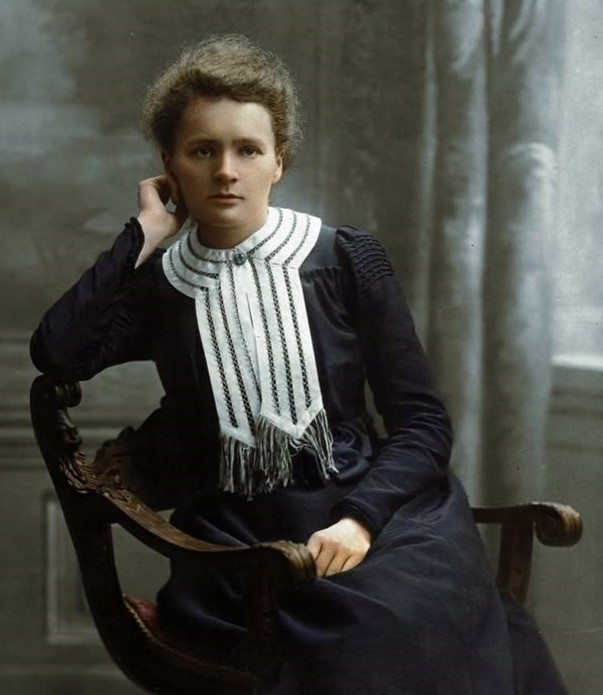

Maria Salomea Skłodowska
- A Pioneer in Science

Radium naturally releases helium gas as it decays — like it's quietly exhaling from within.


There are sadistic scientists who hurry to hunt down errors instead of establishing the truth.
Marie Curie (1867–1934)
Life Journey
1867
Birth in Warsaw
Born as Maria Skłodowska in Warsaw, Poland on November 7 , the youngest of five children. Her parents were both teachers who believed strongly in education.
1878-1883
Early Education in Warsaw
Attended a boarding school, then the gymnasium for girls. Despite facing gender discrimination in education, she excelled in her studies, particularly in physics and mathematics.
1883-1889
Flying University
Participated in the underground "Flying University," a clandestine educational institution that admitted women during Russian occupation of Poland when formal higher education was denied to women.
1891-1894
Sorbonne University, Paris
Enrolled at the Sorbonne in Paris to study physics and mathematics. Despite financial hardships and living in an unheated attic, she graduated first in her class with a degree in physics and second with a degree in mathematics.
1895
Marriage to Pierre Curie
Married Pierre Curie on july 26, a brilliant physicist she met while seeking laboratory space. Their partnership would lead to groundbreaking discoveries in radioactivity.
1894-1903
Doctoral Research
Conducted groundbreaking research at the School of Industrial Physics and Chemistry in Paris. Worked in primitive conditions in a converted shed, studying uranium rays discovered by Henri Becquerel, eventually leading to her doctoral thesis on radioactivity.
1903
Doctorate in Physics
Became the first woman in France to receive a doctorate in physics. Her thesis on "Researches on Radioactive Substances" was groundbreaking and established her as a leading scientist in the field of radioactivity.
1934
Final Days
Passed away in Passy on July 4th in France, from aplastic anemia caused by long-term exposure to radiation. Her groundbreaking work laid the foundation for numerous advances in the treatment of cancer.
Achievements & Awards
Nobel Prizes
1903: Nobel Prize in Physics
Shared with Pierre Curie and Henri Becquerel for their discoveries in radiation phenomena.
1911: Nobel Prize in Chemistry
For the discovery and isolation of the elements radium and polonium.
Other Recognitions
Davy Medal
1904Awarded by the Royal Society for discovery in chemistry.
First Female Professor
1909Became the first female professor at Sorbonne University.
Curie Institute
1911Founded a world-renowned medical research center.
WWI: Mobile X-Ray Units
1914Created mobile radiography units that helped save thousands of lives.
League of Nations
1922Appointed to the International Commission on Intellectual Cooperation.
Posthumous Honors
1995Honored on currency, stamps, and element "Curium" named after her.
The Discovery Of Marie Curie

Introduction To Research On Radioactivity
Marie Curie's scientific journey truly began when she chose to investigate the mysterious phenomenon of radioactivity, a term she later coined. Inspired by the discoveries of Wilhelm Roentgen (X-rays) and Henri Becquerel (uranium's spontaneous emission of radiation), Curie focused her attention on substances that emitted similar invisible rays. Her pioneering work would not only change the course of physics and chemistry but would also have profound effects on medicine and technology

The Discovery Of Polonium
While systematically studying the mineral pitchblende, Curie noted that the material was significantly more radioactive than could be accounted for by its uranium content alone. She hypothesized that another, unknown element was contributing to the radioactivity. After months of laborious work, including grinding and chemically separating components, Marie Curie and her husband, Pierre Curie, announced in July 1898 the discovery of a new element, which they named polonium, after her beloved homeland, Poland. This was an extraordinary achievement, as isolating a new element required exceptional patience, skill, and innovation, particularly with the crude laboratory equipment of the time.

The Discovery Of Radium
Encouraged by the discovery of polonium, the Curies continued to refine pitchblende and, by December 1898, identified yet another radioactive element, radium. Unlike polonium, radium was found in much larger quantities, which allowed for more extensive study. Radium's intense radioactivity astonished the scientific world. Marie Curie was instrumental in extracting radium chloride in its pure form, a groundbreaking accomplishment that required processing tons of pitchblende residue. The dazzling blue glow of radium salts captured the imagination of scientists.
Coining The Term "Radioactivity"
Marie Curie, a pioneering physicist and chemist, coined the term "radioactivity" in the late 19th century to describe the spontaneous emission of energy from certain elements. While studying uranium and thorium, she noticed that these substances emitted invisible rays that could pass through solid objects and affect photographic plates. Curie's groundbreaking work not only gave a name to this mysterious phenomenon but also laid the foundation for the field of nuclear physics

Award-Winning Recognition
Marie Curie's discoveries did not go unnoticed. In 1903, she shared the Nobel Prize in Physics with Pierre Curie and Henri Becquerel, becoming the first woman ever to receive a Nobel Prize. Her contributions, however, did not stop there. In 1911, she was awarded the Nobel Prize in Chemistry for her discovery of radium and polonium, her investigation into their properties, and her success in isolating radium. She remains the only person to have won Nobel Prizes in two different scientific fields.
A Journey Marked By Struggles And Nobel Glory

Early Struggles In Science
At the outset of her scientific journey, Marie Curie faced profound struggles that tested her resilience. As a woman in the late 19th century, gaining access to advanced scientific education was a rare privilege. Curie fought against deep-rooted societal prejudices that believed scientific pursuits were unsuitable for women. Financial hardships further compounded her difficulties. She had to work long hours, tutoring and taking up odd jobs to fund her studies, often sacrificing her own comfort and health. While studying at the Sorbonne in Paris, she lived in poor conditions—often going without food and suffering from extreme cold in her small rented rooms. Despite these physical and emotional hardships, Curie's dedication to scientific inquiry never wavered. She spent long hours in rudimentary laboratories, conducting experiments with limited resources, determined to uncover the hidden secrets of nature.

Nobel Prize In Physics (1903)
Marie Curie's tireless efforts bore fruit when, in 1903, she was awarded the Nobel Prize in Physics, alongside Henri Becquerel and Pierre Curie, for their groundbreaking work on radioactivity. Despite her major role in the research, initial considerations for the prize did not include her. It was only after strong advocacy by her colleagues that her contributions were acknowledged. Winning the Nobel Prize was a momentous achievement not only for Curie personally but also for women in science, as she became the first woman to ever receive a Nobel Prize. This recognition validated the years of struggle and perseverance she had endured to establish herself in the male-dominated world of physics.

Nobel Prize In Chemistry (1911)
Marie Curie’s achievements did not stop there. In 1911, she won her second Nobel Prize, this time in Chemistry, for her discovery of the elements polonium and radium and for developing methods to isolate radioactive isotopes. This honor made her the first person ever to win Nobel Prizes in two different scientific fields. However, even at this peak of success, Curie faced hostility and skepticism, fueled by nationalism, sexism, and personal attacks. Undeterred, she continued her groundbreaking research, driven by a deep commitment to scientific advancement and humanitarian service.
The Enduring Legacy of Marie Curie

Marie Curie (1867–1934) stands as one of the most influential scientists in history. Her groundbreaking discoveries in radioactivity laid the foundation for modern physics and medicine.
Scientific Achievements
Curie was the first woman to receive a Nobel Prize, and the only individual to win in two different sciences. Her discovery of polonium and radium changed the world’s understanding of atoms forever.
She also created mobile X-ray units during World War I, helping thousands of wounded soldiers. Her courage and intellect saved lives far beyond the lab.
Legacy Beyond Science
Breaking barriers in a male-dominated field, Marie Curie became the first female professor at the University of Paris and a symbol of scientific integrity and female empowerment.
"First principle: never to let one's self be beaten down by persons or by events."
— Marie CurieDid You Know?
Her lab notebooks are still radioactive today.
She trained female medics during WWI.
First person to win 2 Nobel Prizes.
The Death Of Marie Curie

M arie Curie passed away on July 4, 1934, in Sancellemoz Sanatorium in Passy, France, from aplastic anemia, a
condition in which the bone marrow fails to produce sufficient new blood cells. This disease was almost
certainly caused by her prolonged and repeated exposure to ionizing radiation during her scientific
research.
At the time, the health risks of radioactivity were unknown. Curie and her husband Pierre often handled
radioactive materials like radium and polonium without protective gear. She frequently carried radioactive
samples in her coat pockets and stored them in her lab and home, fascinated by their glowing appearance. Over
the years, this unshielded exposure damaged her bone marrow and likely led to the onset of her fatal
illness.
Her death not only underscored the dangers of radiation but also marked a pivotal point in the development of
radiation safety protocols. Despite the personal cost, her legacy lives on in her revolutionary contributions to
physics, chemistry, and medical science.
"Nothing in life is to be feared it is only to be understand"
-Marie CurieMarie Curie's Gallery
{kind=link}
In France,Marie Curie,was highly educated & became known as "mother of modern physics"..Read More..
Circa 1915: Polish chemist Marie Curie (1867-1934) standing in front of a group of cameramen on board a ship.
Marie Curie as a child with her brother and sisters. From left to right Read More..
Read More..
Read More..
Pierre and Marie Curie in their laboratory. 1898, (1951).Read More >>
Curie (1867-1934) with Dean Pegram of the School of Engineering,Read More..
People : Marie Curie , Irene Joliot-Curie,Eve Curie Date : January 01, 1998
.jpg)
Curie (1867-1934) during her tour of the United States in discussion with two fellow scientists in Pittsburgh.
Marie Curie with President Warren G. Harding after he presented her with a vial of radium.
Marie Curie (1867 - 1934) with her daughters Irene and Eve during their visit to the United States, 1921.Read More..